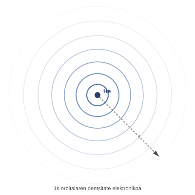
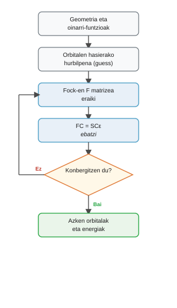

Hartree-Fock metodoa#
Sarrera#
Schrodingerren ekuazioak ez du soluzio matematiko zehatzik onartzen elektroi bat baino gehiagoko sistemetarako, elektroien arteko aldarapen elektrostatikoak sortzen duen akoplamendua dela eta. Hartree-Fock metodoak arazo hau eremu ertainaren hurbilketaren bidez jorratzen du, banakako elkarrekintza instantaneoak espazioan batez besteko potentzial batekin ordezkatuz. Sinplifikazio honek Gaussian bezalako programei aukera ematen die orbital molekularrak eta energia elektroniko osoa zehazteko, prozedura iteratibo auto-konsistente baten bidez.
Arazoa: aldaratzen diren elektroiak#
Bi elektroi dituen atomo batean, hala nola helioan (\(Z=2\)), operadore hamiltondar zehatzak elektroi bakoitzaren energia zinetikoa, nukleoarekiko erakarpena eta bien arteko aldarapen elektrostatikoa barne hartzen ditu:
\(\hat{h}(i)\) operadore monoelektronikoak \(i\) elektroiaren mugimendua deskribatzen du, nukleoaren potentzial erakargarriaren pean, beste elektroia kontuan hartu gabe:
\(1/r_{12}\) aldarapen coulombiarreko terminoa ez balego, ekuazioa aldagaiak bananduz ebatziko litzateke, bi atomo hidrogenoideen produktu gisa. Hala ere, \(1/r_{12}\) bi elektroien posizio instantaneoak akoplatzen ditu: baten banaketa espaziala zehazteak bestearena une bakoitzean ezagutzea eskatzen du. Zailtasun hau edozein sistema polielektronikotara hedatzen da eta egitura elektronikoaren erronka nagusia da.
Oharra
\(1/r_{12}\) terminoak elektroien koordenatu espazialak akoplatzen ditu eta Schrodingerren ekuazioa analitikoki ebaztea eragozten du bi elektroi edo gehiago dituen edozein atomo edo molekulatarako.
Hartree-Fock-en ideia: eremu ertaina#
Ekuazioak desakoplatzeko, Hartree-Fock-en hurbilketak elektroi bikoteen arteko aldarapen instantaneoak hodei elektroniko osoak sortutako batez besteko potentzial elektrostatiko batekin ordezkatzen ditu. Elektroi bakoitza, orduan, nukleoak eta gainerako elektroien batez besteko dentsitateak sortutako eremuan mugitzen da.
Sinplifikazio honen pean, elektroi bakoitzak balio propioen ekuazio monoelektroniko bat betetzen du, Fock operadoreak gobernatuta \(\hat{f}\):
Helio atomoaren kasuan, non bi elektroiek espazio-orbital bera okupatzen duten \(\phi_1\) kontrako spinekin, Fock operadoreak forma hau hartzen du:
non \(\hat{J}_1\) beste elektroiaren hodeiak sortutako batez besteko potentzial elektrostatikoa adierazten duen:
Oharra
Elektroi arteko aldarapena batezbestekoa egitean, elektroien posizioen arteko korrelazio instantaneoak baztertzen dira (korrelazio elektronikoa). Teorema bariazionalaren arabera, Hartree-Fock mugan kalkulatutako energia sistemaren energia zehatz ez-erlatibistaren goiko muga bat da beti.
Orbitalak: oinarri-funtzioen konbinazio lineala (LCAO)#
Elektroi bakoitzaren egoera espaziala \(\phi_i(\mathbf{r})\) orbital baten bidez deskribatzen da. Helioaren oinarrizko egoeran, bi elektroiek \(\phi_1\) orbitala okupatzen dute kontrako spinekin (\(\alpha\) eta \(\beta\)).
\(\phi_i(\mathbf{r})\)ren forma matematiko zehatza a priori ezagutzen ez denez, aldez aurretik definitutako \(K\) oinarri-funtzioen konbinazio lineal gisa hedatzen da (\(\{\chi_\mu\}\)) (normalean nukleoetan zentratutako funtzio gausiarrak):
Arazo kuantikoa ebaztea sistemaren energia osoa minimizatzen duten \(C_{\mu i}\) koefiziente numerikoak zehaztea da. Irudiak helio atomoaren 1s orbitalaren dentsitate elektronikoa erakusten du.


Roothaan-Hall ekuazioak: Helioaren adibidea bi orbitalekin#
LCAO hedapena Fock ekuazioan ordezkatu eta oinarri-funtzio bakoitzera proiektatzean, ekuazio integrodiferentzialak matrize-balio propioen problema orokor batean eraldatzen dira:
Demagun helio atomoa bi s motako funtzioz (\(\chi_1\) eta \(\chi_2\)) osatutako oinarri batekin deskribatuta dagoela, adibidez, bi funtzio gausiar desberdin exponenterekin, hodei elektronikoa erradialki hedatu edo uzkurtu ahal izateko. Espazio-orbital bakoitza honela adierazten da:
2x2 dimentsioko sistema matrizeala forma esplizitu hau hartzen du:
Matrize bakoitzak esanahi fisiko zuzena du:
Gainjartze-matrizea \(\mathbf{S}\): Bi oinarri-funtzioen arteko ez-ortogonalitate espaziala deskribatzen du:
Funtzioak normalizatuta daudenez, diagonal-elementuek 1 balio dute (\(S_{11} = S_{22} = 1\)). Gurutzatutako terminoak bi funtzioen arteko gainjartze-integrala adierazten du:
Fock matrizea \(\mathbf{F}\): Oinarri-funtzio bakoitzean elektroi baten energia eraginkorra (\(F_{11}, F_{22}\)) eta elkarren arteko akoplamendua (\(F_{12} = F_{21}\)) ditu:
Bere elementuak Fock operadorea oinarrian integratuz lortzen dira:
Koefiziente-matrizea \(\mathbf{C}\): Zutabe bakoitzak espazio-orbital bat definitzen du:
Lehen zutabeak \(\begin{pmatrix} C_{11} \\ C_{21} \end{pmatrix}\) \(\chi_1\) eta \(\chi_2\) okupatutako orbitalean \(\phi_1\) (HOMO) dituen pisuak ditu. Bigarren zutabeak \(\begin{pmatrix} C_{12} \\ C_{22} \end{pmatrix}\) orbital birtualeko \(\phi_2\) (LUMO) koefizienteak ditu.
Orbitalen energia-matrizea \(\boldsymbol{\varepsilon}\): Matrize diagonal bat da, auto-balio energetikoak dituena:
non \(\varepsilon_1 = \varepsilon_{\text{HOMO}}\) orbital lotuaren energia den (negatiboa) eta \(\varepsilon_2 = \varepsilon_{\text{LUMO}}\) lehen orbital hutsaren energia den.
Oharra
[OHARRA] Helioaren kasua sistema errealen aurrean: PROTECTED_BLOCK_72 dimentsioko matrizeak
Komeni da ez nahastea 2×2 eredu hau kalkulu molekularren benetako dimentsioarekin:
Zergatik 2×2 adibide honetan? Nahita aukeratu dugulako oinarri minimo bat \(K = 2\) funtzioena bi elektroi dituen atomo baterako. Bi oinarri-funtzio daudenez, zehazki 2 orbital lortzen dira: orbital okupatu bat (bi elektroi parekatuekin) eta orbital birtual huts bat.
Dimentsioak sistema errealetan: Edozein kalkulu molekular estandarretan, oinarri-funtzioen kopurua \(K\) askoz handiagoa da (\(K = 30, 80, 300\dots\)). \(\mathbf{F}\), \(\mathbf{S}\) eta \(\mathbf{C}\) matrizeak beti dira \(K \times K\) dimentsioko matrize karratuak.
Orbital okupatu eta birtualen banaketa: Geruza itxiko sistema neutro batean, \(N\) elektroi eta \(K\) oinarri-funtziorekin, metodoak beti sortzen ditu \(K\) orbital espazial. \(\mathbf{C}\) matrizearen lehen \(N/2\) zutabeek soilik dagozkien orbital okupatuei (HOMO \(\phi_{N/2}\) arte); gainerako \(K - N/2\) zutabeek orbital birtual hutsei dagozkie (LUMO \(\phi_{N/2 + 1}\) hasita).
SCF zikloa: iterazio bidez ebaztea#
Mendekotasun zirkular bat dago: Fock matrizea \(\mathbf{F}\) kalkulatzeko, dentsitate elektronikoa ezagutu behar da (koefizienteak \(\mathbf{C}\)), baina \(\mathbf{C}\) lortzeko, sistema \(\mathbf{F}\mathbf{C} = \mathbf{S}\mathbf{C}\boldsymbol{\varepsilon}\) diagonalizatu behar da.
Zirkulartasun hau iteratiboki ebazten da eremu auto-konsistentearen metodoaren bidez (SCF, Self-Consistent Field):
Koefizienteen hasierako estimazio bat sortzen da (guess \(\mathbf{C}^{(0)}\)).
Koefiziente horiekin Fock matrizea \(\mathbf{F}^{(k)}\) eraikitzen da.
Sistema \(\mathbf{F}^{(k)}\mathbf{C} = \mathbf{S}\mathbf{C}\boldsymbol{\varepsilon}\) diagonalizatzen da koefiziente berriak \(\mathbf{C}^{(k+1)}\) eta energia berriak \(\boldsymbol{\varepsilon}^{(k+1)}\) lortzeko.
Egiaztatzen da energia- eta dentsitate-aldaketa aurreko urratsean finkatutako tolerantzia baino txikiagoa den (adibidez \(10^{-6}\) Ha). Konbergitu ez bada, 2. urratsera itzultzen da.


Energia: orbitala vs totala#
Fock matrizea diagonalizatzean lortutako autobalioak \(\varepsilon_i\) orbital bakoitzaren energiei dagozkie, ez sistemaren energia totalari.
Helioaren bi elektroientzat \(\phi_1\) orbitalean, orbitalaren energiak elektroi bakarreko energia \(h_{11}\) eta beste elektroiarekiko aldarapen elektrostatikoa \(J_{11}\) barne hartzen ditu:
Bi elektroien orbital-energiak zuzenean batuko bagenitu:
elektroi arteko aldarapena \(J_{11}\) bi aldiz kontatzen arituko ginateke. Beraz, benetako energia elektronikoak interakzio bikoiztu hori kentzen du:
Nukleo anitzeko molekula batean, energia totalak, gainera, nukleo arteko aldarapen coulombiarra \(V_{NN}\) gehitzen du:
Balio hori zehazki Gaussian-ek SCF Done lerroan inprimatzen du .log fitxategian.
Abisua
Gaussian-en log-aren SCF Done lerroan agertzen den energia sistemaren energia totala da \(E_{\text{total}}\), ez orbital indibidual baten energia \(\varepsilon_i\).
HFren mugak: korrelazio elektronikoa#
Hartree-Fock metodoak interakzio instantaneoak batez besteko eremu batekin ordezten dituenez, elektroi bat puntu batean aurkitzeko probabilitatea bestearen posizio instantaneotik independentea dela suposatzen du. Hartree-Fock-en energia oinarri infinituarekin (\(E_{\text{HF}}^{\text{limit}}\)) eta energia zehatz ez-erlatibistaren (\(E_{\text{exacta}}\)) arteko aldeak korrelazio-energia definitzen du:
\(E_{\text{HF}}^{\text{limit}} \ge E_{\text{exacta}}\) printzipio bariazionalagatik, korrelazio-energia beti negatiboa da (\(E_{\text{corr}} \le 0\)). Nahiz eta energia totalaren % 1 baino gutxiago izan ohi den, erabakigarria da lotura-energiak, erreakzio-hesiak eta trantsizio espektroskopikoak zehaztasunez kalkulatzeko.
Bibliografia#
Gaussian 16, Revision A.03, M. J. Frisch, G. W. Trucks, H. B. Schlegel et al., Gaussian, Inc., Wallingford CT, 2016.
Szabo, A.; Ostlund, N. S. Modern Quantum Chemistry. Dover, 1996.
Uhin-funtzio antisimetrikoa eta Slater-en determinantea
Pauliren bazterketa-printzipioak eskatzen du uhin-funtzio elektronikoa antisimetrikoa izatea bi elektroi edozeinen trukearen aurrean:
Kontrako spinak dituzten bi elektroirentzat \(\phi_1\) orbital espazialean, uhin-funtzioa Slater-en determinante gisa adierazten da:
Bi elektroien koordenatuak trukatzea determinantearen bi errenkada permutatzearen baliokidea da, eta horrek automatikoki zeinu negatiboa ematen dio eta Pauliren printzipioa bermatzen du.
Korrelazio-energia eta HF osteko metodoak
Hartree-Fock-en uhin-funtziotik abiatuta, hainbat metodo garatu dira korrelazio elektronikoa berreskuratzeko eta batez besteko eremuaren hurbilketa gainditzeko. Bigarren ordenako Møller-Plesset-en perturbazioaren teoriak (MP2) zuzenketa dinamikoak gehitzen dizkio energiari, kostu konputazional moderatuarekin. Bestalde, Coupled Cluster bezalako metodoek, kitzikapen sinple eta bikoitzekin (CCSD), zehaztasun askoz handiagoa eskaintzen dute, kalkulu-ahalegin handiagoaren truke. Eskema hauek xehetasunez aztertzen dira ondorengo atal teoriko batean (Hartree-Focketik haratago).